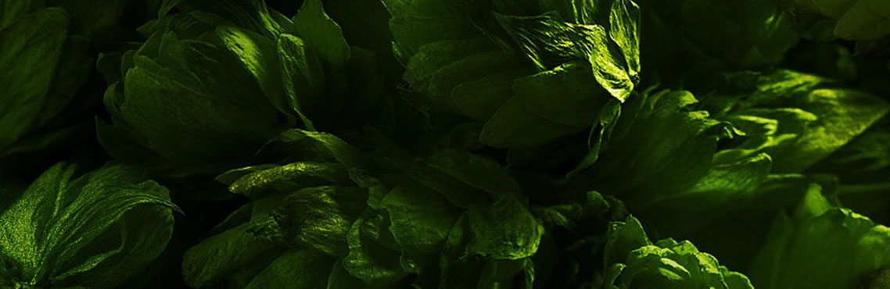

Найкращі інгредієнти
У середині XIX століття американці надавали перевагу міцному пиву, напоям сортів ель і більш легкому баварському пиву. Відчувши потребу у створенні зовсім нового смаку, Адольф Буш почав варити Богемський лагер - більш свштле, ніж баварське і відмінне від традиційних елів, пиво. Його назвали Будвазер Лагер. В майбутньому це пиво увійде в історію як перший національний пивний бренд Америки.

Свіжий рис
У середині XIX століття американці надавали перевагу міцному пиву, напоям сортів ель і більш легкому баварському пиву. Відчувши потребу у створенні зовсім нового смаку, Адольф Буш почав варити Богемський лагер - більш свштле, ніж баварське і відмінне від традиційних елів, пиво. Його назвали Будвазер Лагер. В майбутньому це пиво увійде в історію як перший національний пивний бренд Америки.

Наш власний хміль
У середині XIX століття американці надавали перевагу міцному пиву, напоям сортів ель і більш легкому баварському пиву. Відчувши потребу у створенні зовсім нового смаку, Адольф Буш почав варити Богемський лагер - більш свштле, ніж баварське і відмінне від традиційних елів, пиво. Його назвали Будвазер Лагер. В майбутньому це пиво увійде в історію як перший національний пивний бренд Америки.
Унікальні дріжджові культури
У середині XIX століття американці надавали перевагу міцному пиву, напоям сортів ель і більш легкому баварському пиву. Відчувши потребу у створенні зовсім нового смаку, Адольф Буш почав варити Богемський лагер - більш свштле, ніж баварське і відмінне від традиційних елів, пиво. Його назвали Будвазер Лагер. В майбутньому це пиво увійде в історію як перший національний пивний бренд Америки.
Вода кришталевої чистоти
У середині XIX століття американці надавали перевагу міцному пиву, напоям сортів ель і більш легкому баварському пиву. Відчувши потребу у створенні зовсім нового смаку, Адольф Буш почав варити Богемський лагер - більш свштле, ніж баварське і відмінне від традиційних елів, пиво. Його назвали Будвазер Лагер. В майбутньому це пиво увійде в історію як перший національний пивний бренд Америки.
Тепер ви знаєте все про інгредієнти, але що вам відомо про сам
процес?